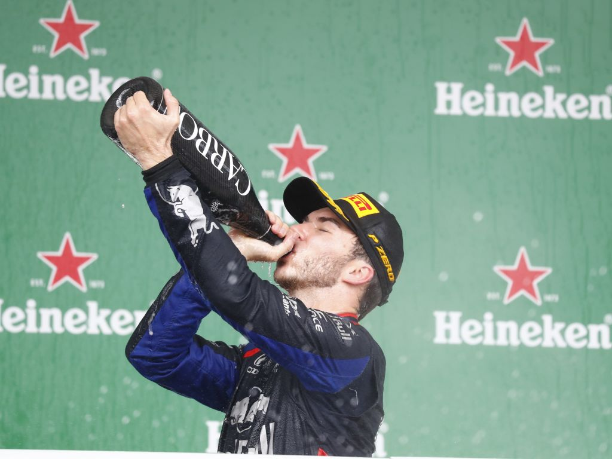
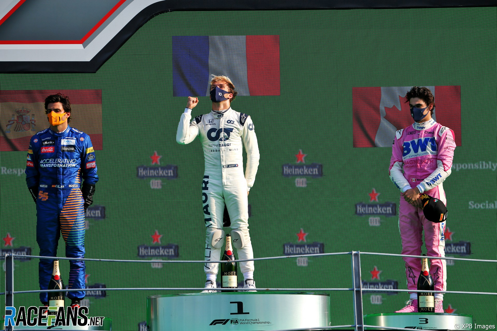
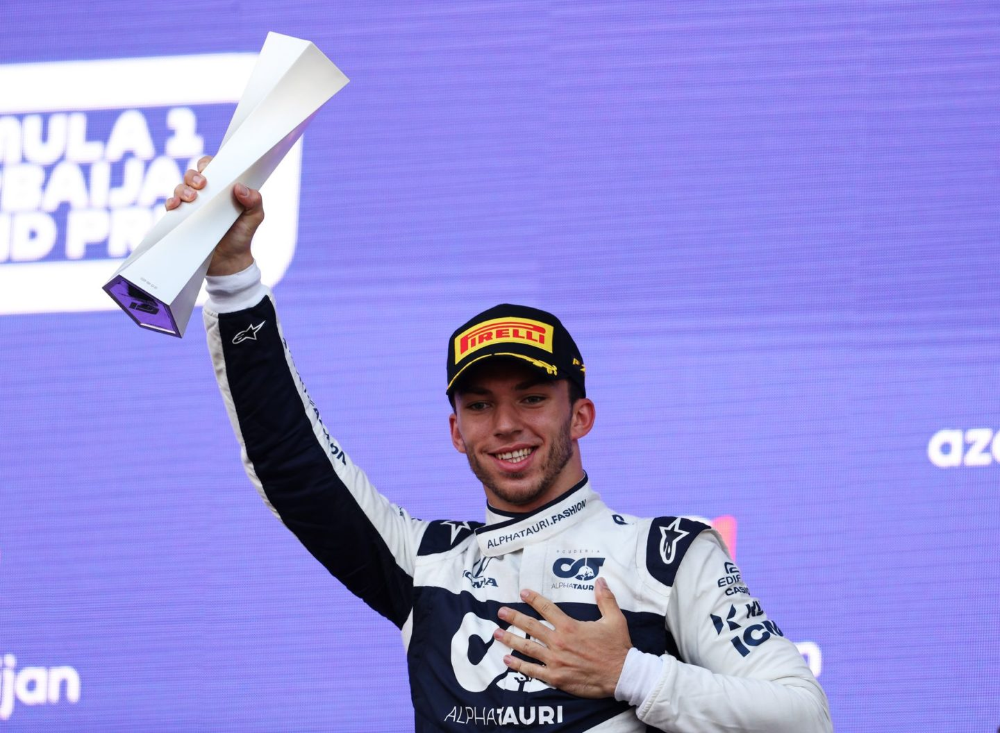

2019 Brazilian Grand Prix
1. Max Verstappen
2. Pierre Gasly
3. Carlos Sainz
After qualifying P7, Pierre Gasly raced for 71 laps and dodged
incidents causing 2 safety cars. On lap 70/71, the order went 1.
Verstappen, 2. Albon, 3. Hamilton, 4. Gasly, 5. Sainz. Gasly was P3
until Hamilton passed Gasly, but Hamilton hit Alex Albon causing Albon
to DNF and Hamilton to lose a place, giving Gasly P2 and his maiden
podium. Hamilton would finish the race P3 but get penalized for the
collision, raising Sainz to P3 to round out the top 3.

2020 Italian Grand Prix
1. Pierre Gasly
2. Carlos Sainz
3. Lance Stroll
During the Italian Grand Prix at the Monza International Circuit
during the midst of the Covid-19 pandemic, Pierre Gasly qualified
in the middle of the field at P10, but who knew what would come next.
Because of 2 safety cars for Kevin Magnussen and Charles LeClerc,
Gasly gained 7 position to P2, only behind Lewis Hamilton because
he already pit for tires before the saftey car came out. This allowed
him to pass a large portion of the grid because they were in the pitlane
On lap 35, Gasly was in first with only Carlos Sainz 5 seconds behind.
The gap would slowly decrease, but all Gasly had to do was defend.
After 18 laps of defending and pulling away, Gasly won at Monza.

2021 Azerbaijan Grand Prix
1. Sergio Perez
2. Sebastian Vettel
3. Pierre Gasly
After nailing his Q3 lap at the Baku City Circuit, Gasly landed P4 to start
at Azerbaijan. Since Baku is a street circuit, qualifying is everything because
it is difficult to overtake. Throughout the race, there were double yellow flags and a
safety car, Gasly managed to maintain and gain positions. Verstappen and Stroll
DNF'd with tyre failure, Russell with a gearbox issue, and his future teammate
Ocon retiring due to his turbocharger, Gasly managed to get his third and latest
F1 podium to this day.